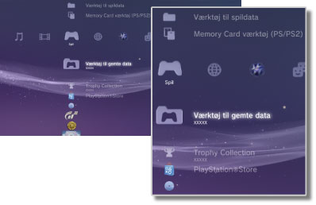

Spil > Spilkategori
Spilkategori
Følgende ikoner vises under  (Spil). De viste ikoner afhænger af brugsbetingelserne.
(Spil). De viste ikoner afhænger af brugsbetingelserne.

 |
PlayStation®Store | Se oplysninger fra PlayStation®Store. |
|---|---|---|
 |
Afslut spil | Afslut PlayStation®3 formateret software. Dette ikon vises kun under selve spillet. |
 |
(titelnavn) | Afspil en softwaretitel i PlayStation®3-format. Der vises et billede, når ikonet vælges. |
  |
PlayStation®2 format disk | Dette ikon betyder, at du kan afspille en titel i PlayStation®2 formateret software. |
 |
PlayStation® format disk | Dette ikon betyder, at du kan afspille en titel i PlayStation® formateret software. |
 |
Værktøj til gemte data | Kopier/slet eller få vist oplysninger om gemte data til PlayStation®3 formateret software. |
| Memory Card værktøj (PS/PS2) | Opret og tilknyt slots til interne hukommelseskort for at gemme data til software i PlayStation®2-/PlayStation®-format. Du kan også kopiere/slette eller få vist oplysninger om de gemte data. | |
 |
Værktøj til spildata | Der kan gemmes yderligere data til visse spil. Du kan slette eller få vist oplysningerne om dataene. |
 |
Trophy Collection | Viser de Trophies, som du har vundet i spil, der understøtter Trophy-funktionen. Når du er nået op på et bestemt niveau eller har udført bestemte opgaver i et spil, kan du modtage Trophies for dine præstationer. |
 |
(PlayStation®3 eller PlayStation®2 formateret software på harddisken) | Dette ikon betyder, at der er installeret PlayStation®3 eller PlayStation®2 formateret software på harddisken. Der vises et miniaturebillede for spillet. |
 |
(data gemt på harddisken) | Dette ikon betyder, at der er downloadet spildata eller udvidelsesdata til harddisken. Dataene installeres, når du klikker på ikonet. Det viste ikon afhænger af datatypen. |
Tips
 eller
eller  vises for indhold, der er begrænset af forældrecensur. Indholdet kan afspilles efter indtastning af en firecifret adgangskode. Adgangskoden kan indstilles under
vises for indhold, der er begrænset af forældrecensur. Indholdet kan afspilles efter indtastning af en firecifret adgangskode. Adgangskoden kan indstilles under  (Indstillinger) >
(Indstillinger) >  (Sikkerhedsindstillinger).
(Sikkerhedsindstillinger). - Hvis der sluttes en enhed, som ikke er kompatibel med HDCP-standarden (High-bandwidth Digital Content Protection), til systemet vha. et HDMI-kabel, kan der ikke sendes video og/eller lyd fra systemet.
- Ophavsretligt beskyttede Blu-ray-diske kan kun afspilles ved 1080p via et HDMI-kabel sluttet til en enhed, som er kompatibel med HDCP-standarden.
- I sjældne tilfælde vil diske og andre medier muligvis ikke fungere ordentligt, hvis de afspilles på PS3™-systemet. Dette skyldes primært variationer i produktionsprocessen eller kodningen af softwaren.
Vigtigt
- Nogle titler i PlayStation®2- eller PlayStation® formateret software afspilles anderledes på et PS3-system end på et PlayStation®2- eller PlayStation®-system, eller måske afspilles de ikke korrekt på PS3™-systemet.
- Ikke alle PS3™-systemer understøtter afspilning af PlayStation®2 formateret software. Yderligere oplysninger findes under [Understøttede disktyper], på SCE-webstedet for dit land/område eller i den dokumentation, der fulgte med dit PS3™-system.